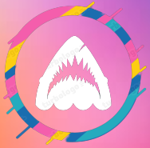

|  COMUNICADO OFICIAL CESION GERARD | ||
|
Estimados seguidores y deportistas, Nos entristece comunicar la cesión de uno de nuestros destacados integrantes al Íbis Sport Club, que actualmente compite en el Campeonato Pernambucano de serie A2. Deseamos fervientemente que este jugador continúe su carrera con éxito en su nuevo club y en el contexto del fútbol brasileño. Le extendemos nuestros mejores deseos y agradecemos su contribución, que sin duda ha sido un gran muro para Aspiramos a continuar nutriendo a futuras estrellas, brindándoles la preparación necesaria para que alcancen el éxito en el ámbito del fútbol profesional, tanto en la actualidad como en el futuro. La partida de este jugador nos permitirá mejorar las condiciones salariales de los demás miembros del equipo, fortaleciendo así nuestra unidad y compromiso colectivo. |
Darrera Noticia 1Nos entristece comunicar la cesión de uno de nuestros destacados integrantes al Íbis Sport Club, que actualmente compite en el Campeonato Pernambucano de serie A2. Darrera Noticia 2Aspiramos a continuar nutriendo a futuras estrellas, brindándoles la preparación necesaria para que alcancen el éxito en el ámbito del fútbol profesional |
|
| Realizado por:jan martinez | ||